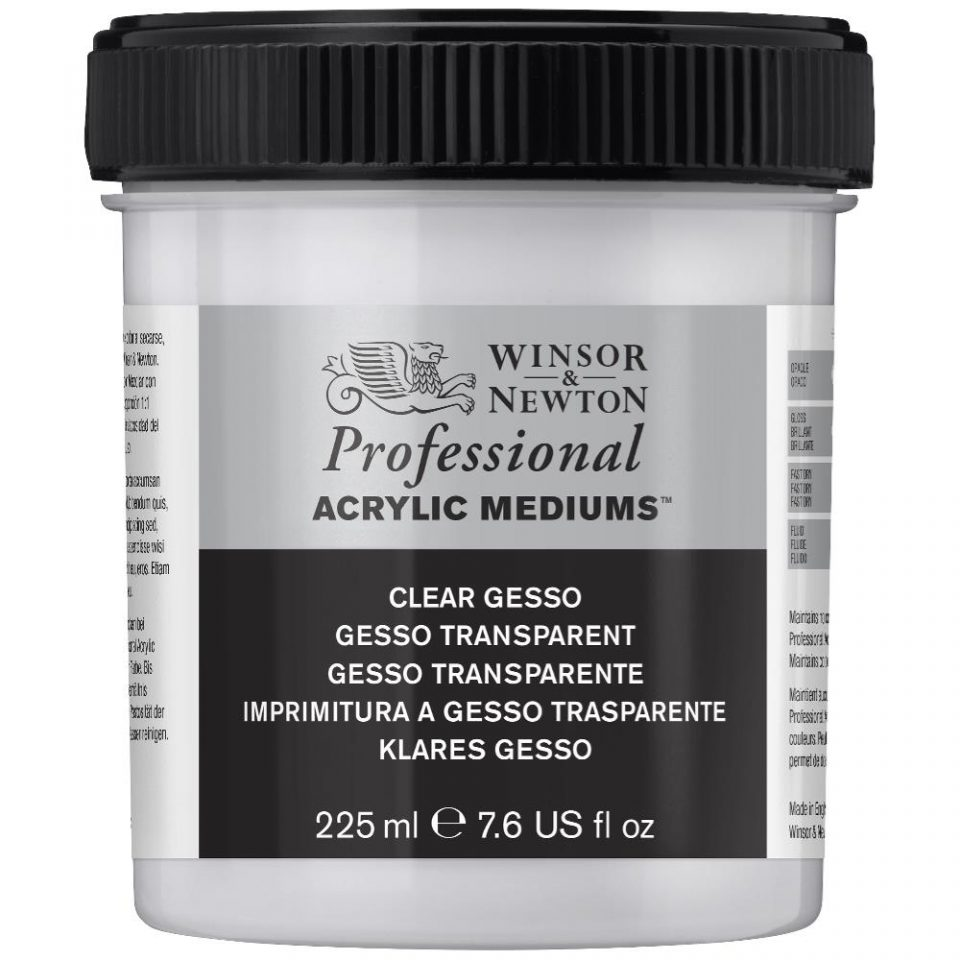
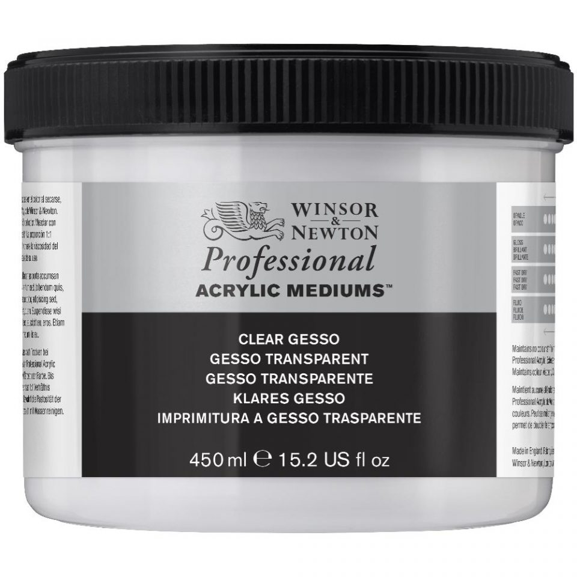
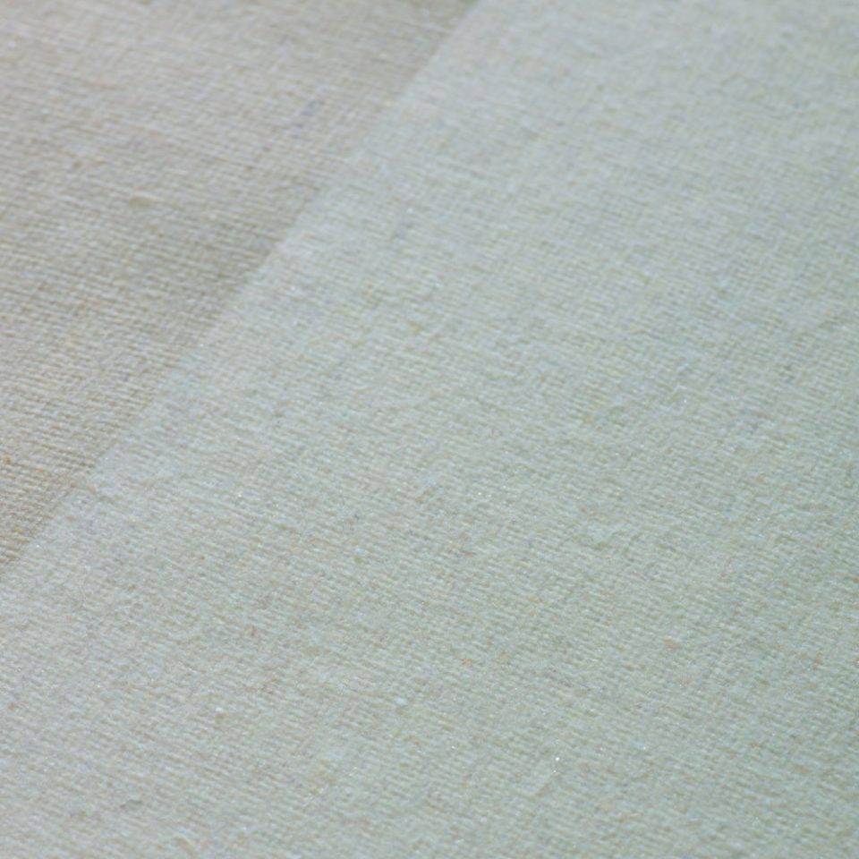
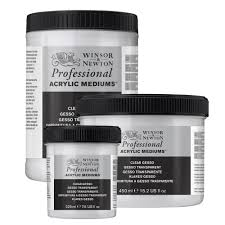

Winsor & Newton Artisan Professional Acrylic Gesso Primer
A gesso made from unpigmented clear resin which dries completely clear. Can also be used to make your own coloured gesso primers by the addition of acrylic colours. With a balanced absorbency and excellent tooth this gesso creates the perfect surface upon which to paint. For use with all acrylic and oil colours as well as mixed media techniques.
Please note this product is going through a transition period with the label, you may receive products labelled as ARTISTS' instead of PROFESSIONAL, rest assured the formula remains the same.
Price:€ 16,33
Review

Painter456
It is okay